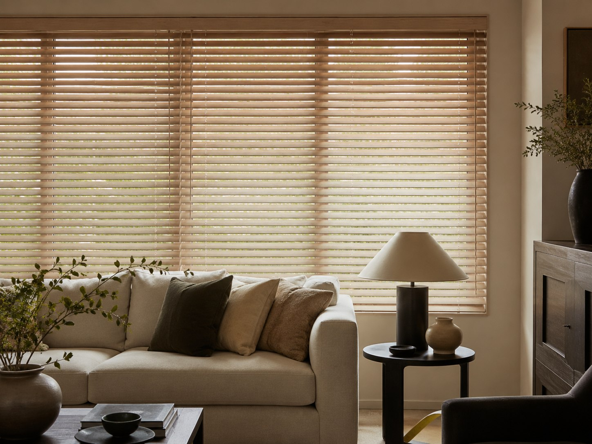
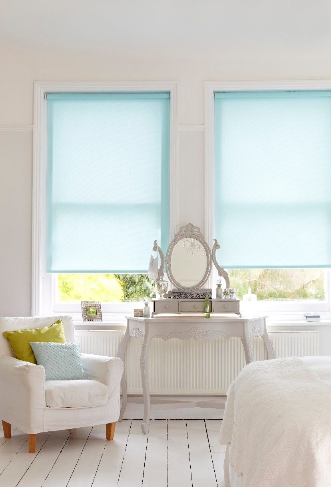
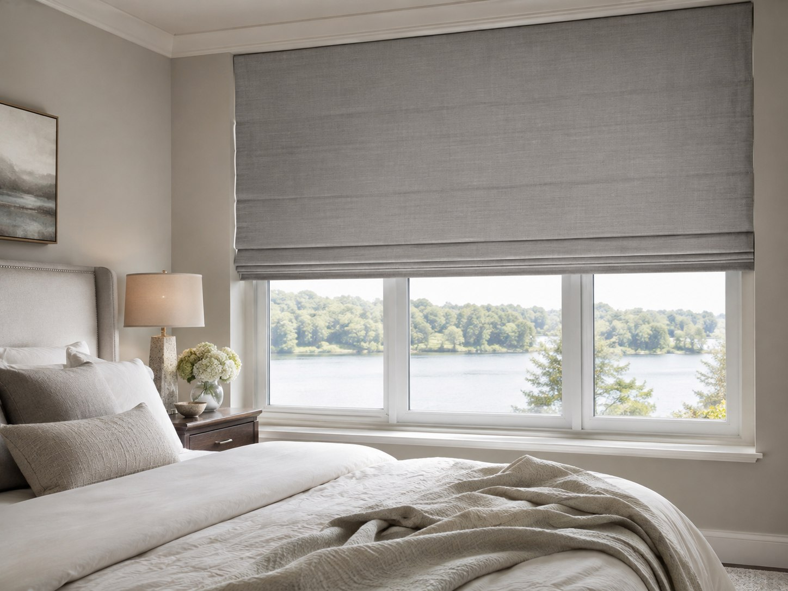
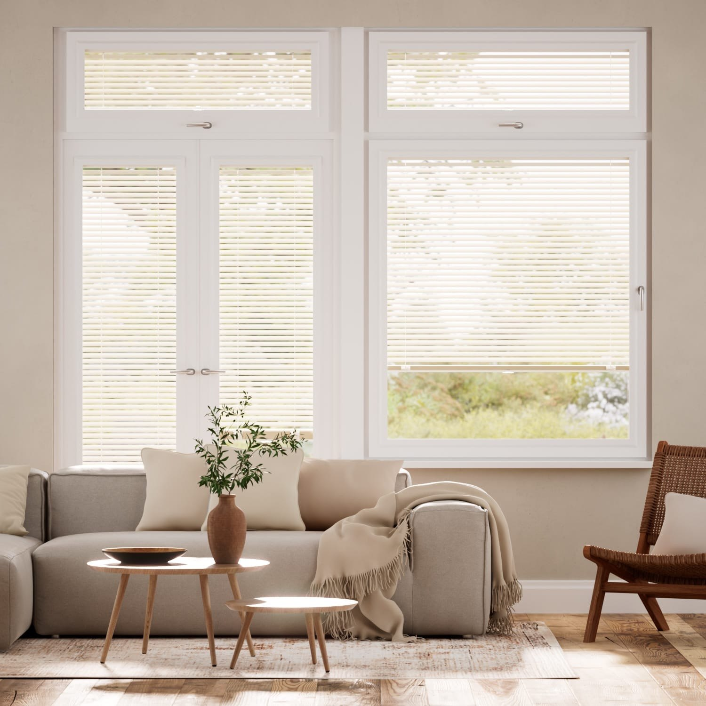
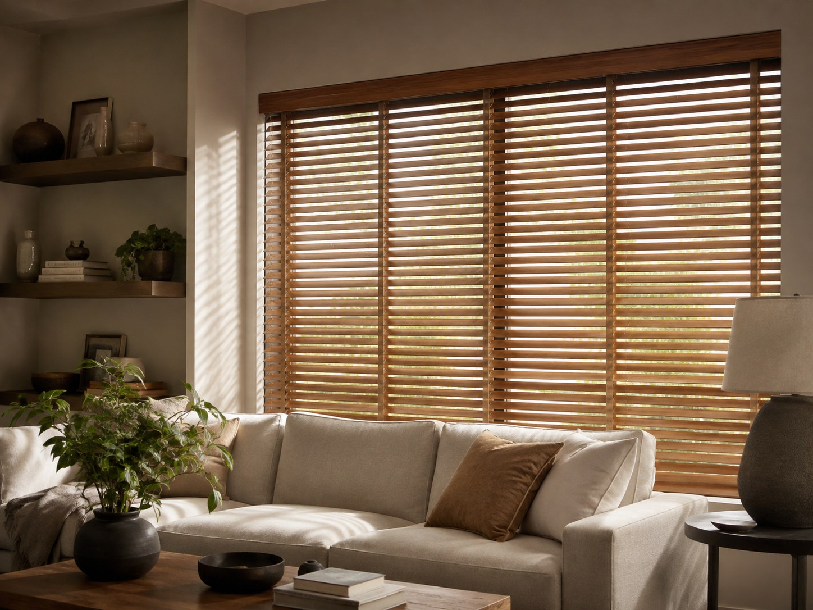

Safety fitted in,
not left to chance.
Children are naturally curious, and a hanging loop can become dangerous very quickly. That is why Design Blinds recommends safe-by-design options wherever practical and installs the correct safety device whenever a cord or chain is required.
- Safety devices fitted as standard
- Cord-free options available
- Advice for every room

A whole-home responsibility.
Blind cords and chains can present a strangulation risk to babies and young children. The danger is not limited to nurseries: accidents have occurred in bedrooms and living rooms, often after a child has climbed onto furniture near a window.
Since the child-safety changes introduced in 2014, new blinds with looped controls must incorporate or be supplied with suitable safety measures. Design Blinds treats this as part of the installation, not an optional extra left in the packaging.
The requirement still matters when no child lives at the property. Grandchildren, relatives or friends may visit; tenants and future owners may have young families; and children are often drawn to unfamiliar controls. A safe fitting should account for those foreseeable changes.
Safety also depends on the space around the blind. Cots, beds, playpens, highchairs and climbable furniture should be kept away from windows and operating cords. The device and the room layout work together.
Different controls, different safeguards.
We confirm the correct arrangement for the blind, its controls and the window position during fitting.
Cord cleats
Commonly used with Roman, Venetian and Wooden Venetian controls. The spare cord wraps securely in a figure of eight on a cleat fixed out of reach.
Chain tensioners and tidies
Roller, Vertical and some Roman controls use a firmly fixed device that holds the chain continuously taut against an adjacent surface.
Breakaway components
Selected systems include parts designed to separate when sufficient force is applied, interrupting a hazardous loop. They must remain correctly assembled and unobstructed.
Safe-by-design operation
Cordless, concealed or tensioned-control blinds reduce access to hazardous loops and are the preferred direction for children's bedrooms.


Look beyond the child's bedroom.
Walk through every room a young child uses or visits, including grandparents' homes and rental properties.
Look for accessible loops
Check cords, chains, tapes and inner cords on blinds and corded curtain tracks.
Check each device is fixed
A loose tensioner or unused cleat cannot do its job. Secure spare cord fully after every use.
Move climbable furniture
Keep cots, beds, highchairs, playpens, chairs and storage furniture away from window controls.
Review older blinds
Blinds installed before the 2014 changes may lack modern safeguards. Seek advice if they cannot be made safe—do not simply cut the cord.
Safer by design, simple to use.
For children's rooms especially, the first question should be whether an accessible operating cord or chain is needed at all.
Perfect Fit systems
A made-to-measure frame clips between compatible uPVC window beading and glass, with the blind operated by a tab or wand rather than a hanging loop.
Pleated, Venetian and Roller options
Depending on the window, these styles may be available in contained or cordless configurations that keep operation straightforward.
Chain-free luxury Rollers
Spring-operated Roller systems offer a clean finish without a side chain, making them worth considering for bedrooms and play spaces.


Practical questions, answered.
Yes. Children may visit, a property may later be sold or rented, and blind controls should remain safe for reasonably foreseeable use. Design Blinds fits the appropriate device wherever a cord or chain requires one.
Official UK guidance says cleats should be fixed to an adjacent surface at least 1.5 metres above the floor, out of children's reach, with spare cord secured in a figure of eight after use.
A blind that is safe by design, without an accessible looped cord or chain, is the preferred starting point for a child's bedroom. Suitable choices depend on the window and blind type.
No. RoSPA advises never cutting blind cords because this may damage the blind and can make it more dangerous. Use an appropriate fitted safety device or seek advice about replacement.
Read more from UK safety specialists.
Independent advice, practical checks and family-safety resources from two established organisations.
Royal Society for the Prevention of Accidents — home and product-safety guidance, including blind cords and chains.
Visit RoSPAChild Accident Prevention Trust — clear advice for families and professionals about blind-cord risks.
Visit CAPTChoose with safety in mind.
We'll recommend the right operating system, fit the required devices and explain how to use them safely.